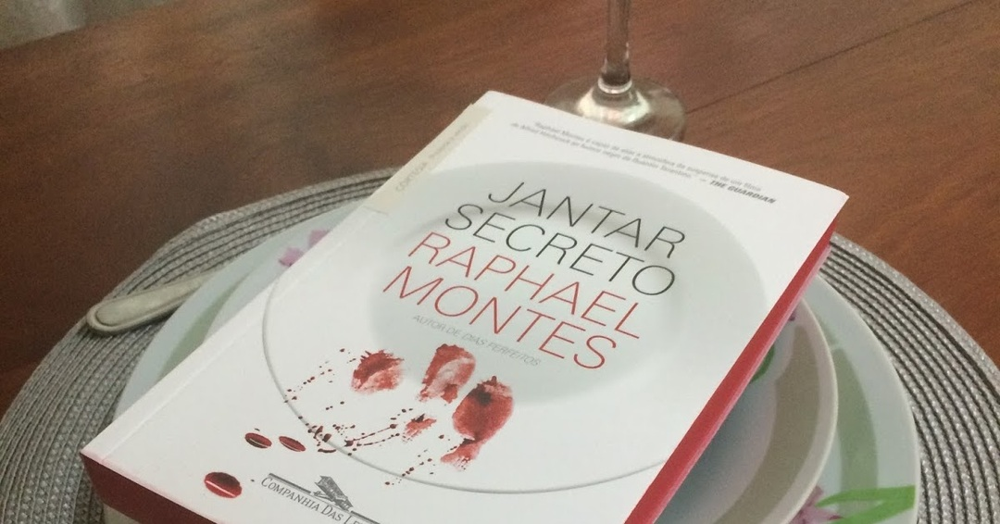

Jantar Secreto - Raphael Montes
28 de março de 2025 13:28 Um grupo de jovens que decidem morar juntos acabam na merda, fazendo o impossível para pagar as contas e a faculdade que mantém seus sonhos vivos. O dinheiro está curto, então, para manter o apartamento, os amigos elaboram jantares secretos, divulgados na internet para uma clientela exclusiva da elite do Rio de Janeiro.
Como todo livro que o Raphael escreve, o intuito dele é provocar, te deixar inquieto, tirar a sua paz. E com esse livro não é diferente.
“Um sujeito estava andando pela rua quando deparou com um restaurante que vendia carne de gaivota. Pediu a carne, comeu, foi para casa e se matou. Por quê?”.
A trama pega como base, esse enigma. Que por si só, já é provocativo. Porém a insanidade vai muito mais além. Ele traz aquela coisa de até onde o ser humano é capaz de chegar quando tem dinheiro e poder envolvido. Por outro lado, esse livro também vai tratar de críticas sociais como a situação econômica do Brasil e como os seres humanos podem ser hipócritas. E no final você não sabe se quem enlouqueceu foi o leitor, o autor ou os persongens.
Mas um ponto que deve ser levado em consideração é que, tem que ter estômago. Teve partes que até me deram enjoo, e tive que parar a leitura.
“Você é engraçado, sabia? Se a carne vem naquele pacote, coberto por plástico transparente, você não se importa. Pega, frita e come sem nem pensar de onde veio. Agora fica aí, cheio de mi-mi-mi. Quer saber? A única diferença é que não sou hipócrita como você.”
Uma boa notícia que talvez não seja tão boa assim é que provavelmente Jantar Secreto será adaptado para o audiovisual nos próximos anos. Não temos nada confirmado ainda, apenas uma matéria do Folha de S. Paulo dizendo que o longa será dirigido por Fernando Fraiha, mas ainda sem previsão de estreia.